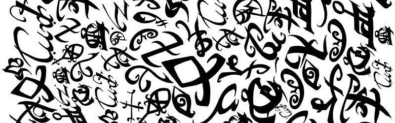

as runas são símbolos angelicais criados pelo Anjo Raziel e concedidos aos Nephilim para lhes conferir poderes e habilidades especiais. Esses símbolos mágicos são desenhados na pele dos Caçadores de Sombras usando um estilo, uma ferramenta mágica que permite ativar o poder das runas. Cada runa tem um propósito específico, como aumentar a força, melhorar a resistência, curar ferimentos ou até proporcionar invisibilidade.
As runas são essenciais para os Caçadores de Sombras, pois lhes dão as habilidades necessárias para lutar contra demônios e proteger o mundo humano. Sem as runas, os Nephilim seriam como humanos comuns e vulneráveis às criaturas sobrenaturais. As runas são desenhadas temporariamente na pele e se apagam após um tempo, embora algumas runas mais poderosas possam ser permanentes. No entanto, não podem ser usadas por mundanos (humanos comuns), já que o corpo humano não suportaria a energia angelical contida nelas.
Essas marcas são o que distinguem os Caçadores de Sombras como uma raça especial e fortalecem a conexão deles com o seu propósito angelical de proteger o mundo. Cada runa tem uma importância estratégica, sendo usadas tanto em combate quanto em situações de cura e defesa.
